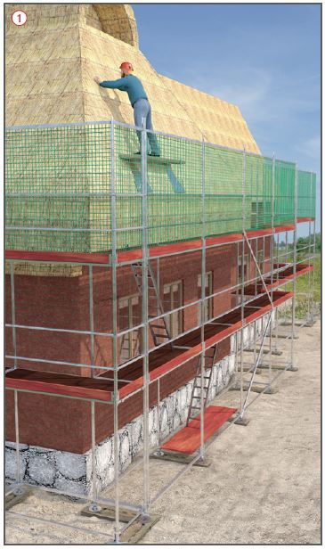
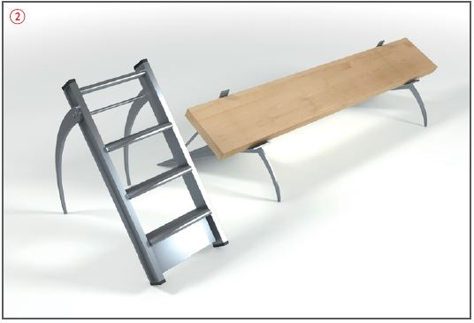

Gefährdungen
- Fehlende Sicherungsmaßnahmen an der Traufe und am Giebel können zu Absturzunfällen führen.
- Eventuell vorhandene Gefahrstoffe bei imprägniertem Reet können zu Erkrankungen führen.
Schutzmaßnahmen
- Bei Umdeckung und Neueindeckung von Reetdächern sind Dachfanggerüste vorzusehen
 .
.
- Für Arbeitsplätze auf dem Dach sind geeignet:
- Deckstühle und Deckleitern mit Stufen 80 mm tief mit mindestens 2 Einstechdornen verwenden
 ,
,
- Konsolenkonstruktionen mit Laufbohle (Deckbäume sind wegen der geringen Standfläche nicht empfehlenswert).
- Einstechdorne von Deckstühlen, Deckleitern und Konsolenkonstruktion nur über Dachlatten, nicht über den Deckdraht hängen.
- Persönliche Schutzausrüstung gegen Absturz (PSAgA) nur verwenden, wenn
- Absturzsicherungen (Seitenschutz) oder
- Auffangeinrichtungen (Fanggerüste, Dachfanggerüste) aus arbeitstechnischen Gründen nicht möglich sind.
- Der Vorgesetzte hat die Anschlageinrichtungen festzulegen und dafür zu sorgen, dass die PSAgA benutzt wird.
- In der Regel ist der Einsatz von PSAgA nicht möglich, da kein geeigneter Anschlagpunkt auf dem Dach vorhanden ist oder befestigt werden kann.
- Beim Einbau von imprägniertem Reet Hautschutzmittel verwenden.
- Beim Abriss von Reet Atemschutzmaske (Partikelfilter) und Schutzanzug benutzen (Belastung durch Staub und biologische Einlagerungen).

Prüfungen
- Beim Einsatz von nichtbauartgeprüften Arbeitsmitteln (z. B. Eigenbau von Konsolen, Deckstühlen, Deckleitern) sind Festlegungen in der Gefährdungsbeurteilung zu treffen.
Arbeitsmedizinische Vorsorge
- Arbeitsmedizinische Vorsorge nach Ergebnis der Gefährdungsbeurteilung veranlassen (Pflichtvorsorge) oder anbieten (Angebotsvorsorge). Hierzu Beratung durch den Betriebsarzt.
07/2021